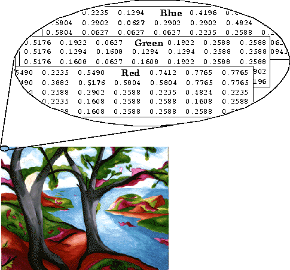
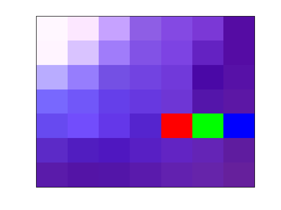
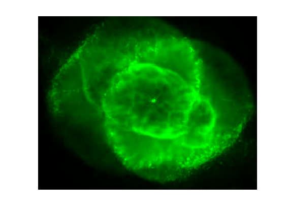

Introduction:
MATLAB est bien adapté à la manipulation des images puisque l'élément de base de traitement sous
MATLAB est la matrice, et une image n'est rien d'autre qu'une matrice dont chaque élément représente la
couleur et l'éclairement d'un pixel.
MATLAB dispose de fonctions permettant de manipuler des images dans différents formats dont :
• BMP (Microsoft Windows Bitmap)
• HDF (Hierarchical Data Format)
• JPEG (Joint Photographic Experts Group)
• PCX (Paintbrush)
• PNG (Portable Network Graphics)
• TIFF (Tagged Image File Format)
• XWD (X Window Dump)
MATLAB supporte trois classes différentes pour l'affichage des images :
• double : Virgule flottante double précision
• unit 16 : entier 16 bits
• unit 8 : entier 8 bits
Les fonctions qui permettent d'afficher les images interprètent les données différemment selon la classe dans
laquelle elles ont été enregistrées.
Les fonctions permettant de manipuler des images sont :
imread: Lit une image à partir d'un fichier
Imwrite: Sauvegarde une image dans un fichier
image: Affiche une image
imagesc: Traite des données et les affiches comme image
imfinfo: Récupère des information sur une image stockée dans un
fichier
Ind2rgb: Convertit une image indexée en une image RGB
Dans MATLAB , une image est représentée par une matrice de donnée n x m plus éventuellement une matrice palette
(colormap) k * 3. Trois type d'images sont ainsi traités :
• Les images indexées
• Les images monochromes ou à niveau de gris
• Les images RGB (truecolor)
LES IMAGES INDEXÉES
Une image indexée est représentée par une matrice index (d'indices) n x m et une matrice colormap k * 3. Chaque
élément de la matrice index est un indice qui pointe vers une ligne de la matrice colormap où se trouve le triplet
R G B correspondant à la couleur du pixel.
Pour visualiser une image indexée, on utilise les deux fonctions
image et
colormap. Le fichier clown.mat situé dans le dossier
C:\MATLABR11\toolbox\matlab\demos contient une image représenté par une matrice index X (200x320) et une matrice
colormap map (81 x 3). Pour lire le fichier
clown.mat on utilise la commande load.
>> load clown
>> image(X);
>> colormap(map);
Pour se débarrasser de la graduation des axes:
>> axis off
Pour arranger la rapport largeur hauteur:
axis image
Si vous disposez du toolbox images processing, vous avez une panoplie d'outils pour manipuler les images comme la
fonction
imshow() qui a quelques petits plus sur la fonction
image() . Essayer
imshow(X,
map) pour voir ce que ça donne. Je vais continuer ce tutoriel avec la fonction
image(), rien ne
vous empêche d'utiliser
imshow()
On peut consulter une portion de la matrice X pour voir à quoi ça ressemble :
>> P = X(78:84,157:165)
P =
77 77 45 64
45 45 45 40 45
42 54 80 42
28 35 60 28 42
42 42 64 31
30 30 42 30 30
60 45 45 14
45 14 45 45 45
54 45 45 45
38 30 30 45 30
71 54 73 54
54 54 73 54 28
77 77 72 60
42 60 42 42 42
Chaque élément est un indice qui correspond à une ligne de la matrice map. On peut voir les couleurs
correspondantes dans la matrice map.
>> map(77,:)
ans =
0.99609375000000 0.86718750000000 0.70312500000000
>> map(14,:)
ans =
0.41406250000000 0.12500000000000 0.12500000000000
Changement de palette
Une image indexée peut être visualisée avec différentes palette. MATLAB dispose d'un certain nombre de
fonctions permettant de générer des colormaps comme : gray, hsv, hot, cool, bone, copper, pink, flag. Pour voir la
liste complète, tapez help graph3d dans la fenêtre MATLAB .
Avec l'image affichée, essayer les commandes suivantes tout en observant l'image à l'écran
colormap(gray)
colormap(bone)
colormap(hsv)
colormap(hot)
Colormap est une fonction (m-file) qui change la matrice palette que Matlab gère comme une propriété
colormap
de la figure. De ce fait les deux commandes suivantes sont équivalentes :
colormap(map);
set(gcf,'colormap',map);
Quand on affiche une image indexée dans une nouvelle figure, elle est affichée avec la colormap par défaut de
MATLAB qui est la colormap JET constituée de 64 triplet RGB. Si on désire changer la colormap par défaut, on
peut utiliser la commande suivante :
set( 0, 'DefaultFigureColormap',colormap_de_votre_choix).
Exemples :
set(0,'defaultfigurecolormap',gray);
set(0,'defaultfigurecolormap',cool(200));
set(0,'defaultfigurecolormap',A); (A est une matrice préparée à l'avance)
L'appel des fonctions gray, cool, . . . sans paramètres génère une colormap ayant la même longueur que la colormap
de la figure courante. S'il n'y a pas d'image à l'écran, il n'y a pas de colormap courante, les colormaps générée
par les fonctions précédentes auront la longueur de la colormap par défaut. Pour générer une colormap avec une
longueur donnée, il suufit de le préciser, exemple :
G = gray(200).
Si le nombre d'indices dans une image est différent du nombre de lignes dans la colormap, la fonction image donne
un rendu de couleur pas toujours correcte. Pour y remédier, utilisez la commande
imagesc qui
adapte l'image à la colormap en faisant correspondre le plus petit indice dans l'image à la première ligne de la
colormap, le plus grand à la dernière ligne, les indices intermédiaires sont répartis linéairement.
I = [1 2 3 4; 1 1 1 1; 2 1 2 1; 1 4 1 4]
P = flag(11);
colormap(P);
imagesc(I); axis off;
LES IMAGES RGB (TueColor)
Les images RGB sont des images où chaque pixel est représenté par une combinaison des trois couleurs de base Red,
Green et Blue. Chaque couleur est codée sur 8 bits ce qui fait que chaque pixel est codé sur 24 bits.
MATLAB stocke une image RGB n x m dans une matrice à
trois dimensions n x m x 3. Chaque plan de la matrice représente une couleur. La couleur d'un pixel est
obtenue par la combinaison des trois couleurs situées à la position correspondante dans la matrice.

Utiliser la fonction
imread() pour lire l'image stockée dans le fichier
ngc6543a.jpg
a=imread('ngc6543a.jpg');
Vérifier sa dimension à l'aide la commande size
size(a)
ans = 650 600 3
Afficher l'image à l'aide la commande image
image(a); axis off; axis image;
On peut diminuer le gap entre l'image et les les limites de la figure
>> set(gca,'position',[0 0 1 1])
L'image étant un peu grande, nous allons en extraire une image contenant seulement la zone centrale en prenant
seulement une partie de la matrice a
b = a(125:450,90:500, : );
image(b); axis off; axis image;
On peut maintenant sauvegarder notre nouvelle image dans un fichier avec le format de notre choix. Essayons les
formats JPG et BMP
imwrite(b, 'etoile.jpg', 'JPG');
imwrite(b, 'etoile.bmp', 'BMP');
imwrite(b, 'etoile.png', 'PNG');
Utilisez l'explorateur Windows pour vérifier que la taille du fichier
etoile.bmp est 30 fois plus
grande que le fichier
etoile.jpg,
Essayons de voir à quoi ressemblent les données dans la matrice. Pour cela formons une petite matrice pour qu'on
puisse l'afficher à l'écran. (6 pixels sur 6)
c = b(160:166,218:224,:)
c(:,:,1) =
255 252 198 142 132 123 85
255 217 160 130 125 100 85
185 150 116 114 113 74 87
120 113 101 103 110 84 92
103 114 100 85 99 96 96
92 81 79 88 98 100 95
90 84 83 90 98 102 102
c(:,:,2) =
247 231 162 94 73 56 12
244 195 124 82 67 34 12
172 125 80 67 57 8 17
104 87 63 56 54 21 23
74 77 55 36 42 34 28
42 29 23 31 36 36 28
27 20 21 26 33 36 32
c(:,:,3) =
255 255 255 229 227 214 163
255 255 250 230 227 194 164
255 253 228 225 218 166 167
254 249 234 224 213 170 165
240 252 233 206 199 179 163
199 192 192 196 195 182 159
170 166 168 172 175 170 156
Vérifiez que les données de chaque plan sont codées sur 8 bits (format unit8 de MATLAB ) : chaque élément varie en
0 et 255. Le triplet [0 0 0] correspond au noir et le triplet [255 255 255] correspond au blanc.
remarque : pour changer de format (classe) de codage des pixels, on pourrait utiliser
les
fonctions de conversion
Visualiser la petite image c crée ci-dessus
image(c);
Changeons la couleur de quelques pixels et regardons l'effet sur l'image :
c(5,5,:)=[255 0 0]; %rouge
c(5,6,:)=[0 255 0]; %vert
c(5,7,:)=[0 0 255]; %bleu
image(c);

On peut aussi changer plusieurs pixel d'un seul coup :
c(3,3:5,:)=[255 255 0; 0 255 255; 255 0 255];
image(c);
On peut aussi modifier une image en injectant une image dedans :
On commence par capturer la partie centrale (étoile) de l'image b
x = b(148:170,208:228,:);
image(x); axis off, axis image;
affichons la taille de la matrice x
size(c)
ans = 23 21 3
Injectons maintenant la matrice x dans la matrice b à la position (131,188)
b(131:131+22, 188:188+20, : ) = x;
image(b); axis off, axis image;
LES IMAGES MONOCHROMES
Une image monochrome est une image représentée par une matrice n x m. Chaque élément de la matrice représente
l'éclairement d'un pixel. Normalement, les éléments de la matrice sont stockés en format double, soit 64 bits en
virgule flottante. Pour réduire l'occupation de la mémoire, MATLAB visualise les images monochromes en les
traitant comme des images indexées. La matrice image est convertie en une matrice d'indice que l'utilisateur peur
visualiser avec la colormap de son choix.
Nettoyons l'espace de travail et chargeons l'image RGB etoile.jpg :
clear
close all
X = imread('etoile.jpg');
gardon seulement le plan rouge ce qui correspond à une image monochrome :
X = X(:,:,1);
Visualisons l'image avec la colormap
bone :
colormap(bone);
imagesc(X); axis off, axis image
On peut aussi nous amuser à faire nos propres colormap :
p = (0 : 0.01 : 1)';
z= zeros(size(p));
maintenant essayer les commandes suivantes tout en observant l'image :
colormap([p z z])
colormap([z p z])
colormap([z z p])
colormap([p p z])
colormap([p z p])
colormap([z p p])
on obtient des images suivantes:
